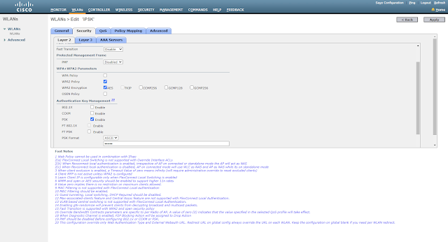
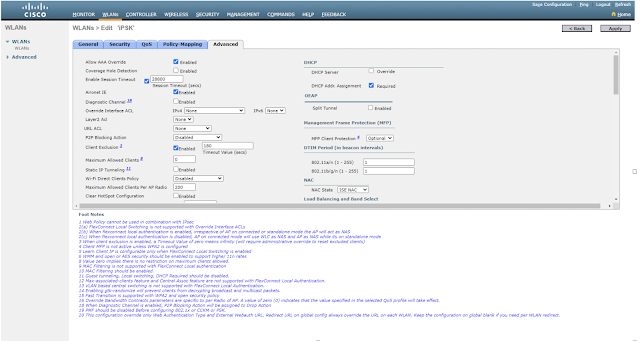
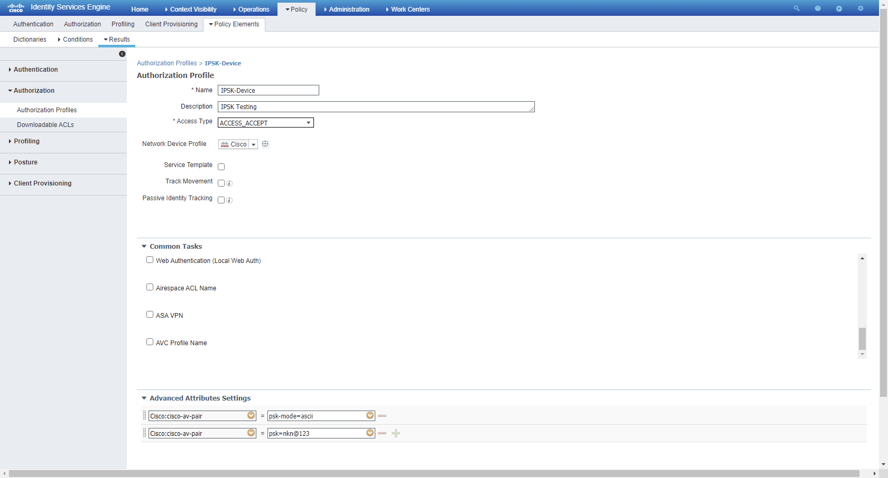
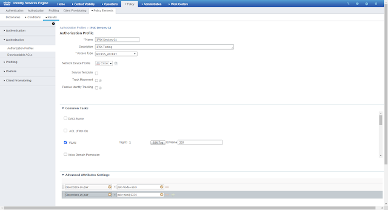
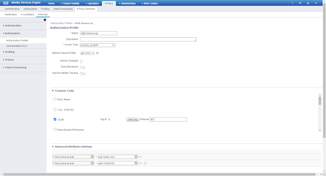

With the evolution of IoT (Internet of Things), devices that connect wirelessly have increased many folds.
From webcams, Smartwatches, fitness bands, firestick, Alexa, Google Home, and many more.., everything is going wireless for connectivity and so does the security threat. The main concern with IoT devices is the unavailability of the full wireless protocol stack (and in the majority of devices, support of 802.1x is not available). So, previously we only have the WPA-PSK option for connecting the IoT devices.
In WPA*-PSK (WPA or WPA2) WLAN, a Pre-Shared Key (PSK) is configured and distributed to all the clients that connect to the WLAN. This leads to PSK leakage, and it can be accessible to unauthorized users (due to the nature of common PSK across all the devices).
Therefore, there was a need to provision unique PSK or Multiple PSK per SSID. Identity-PSKs are unique pre-shared keys created for clients/groups on the same WLAN.
Features of iPSK:-
- Unique PSK for individual Client/Groups.
- Easy to revoke the PSK, if gets compromised without affecting the other groups.
- Easy to track down and mitigate the affected PSK group.

Fig-1 shows the traditional PSK where SSID “PSK” is having the Pre-Shared Key as “Prekey@123” and is distributed to all devices connecting to it.

Fig-2 showing the SSID “iPSK” configured and different devices are being connected to the same SSID iPSK with individual keys.
Pre-requisites for Identity PSK in CISCO environment
- Wireless LAN controller (version 8.5 or later)
- Identity services engine (version 2.2 or later)
- Lightweight Access point
- Identity PSK WLAN
Fig-3 showing the flow of iPSK WLAN and the necessary configuration on WLC and Radius.
Implementing iPSK in Cisco wireless environment:-
Configuration of WLC
Step 1-
Addition of Radius Server. Go to Security>AAA>Radius Authentication. (i.e., adding details of ISE, which is a radius server in this example)
Step 2-
Creation of Identity PSK WLAN
Step 3-
Edit WLAN, Layer-2 choose WPA2 Policy>PSK and check MAC Filtering
Step 4-
Choose Radius (ISE) Server under Security>AAA Servers
Step 5-
Check Allow AAA Override under WLAN Advanced
Now, we have two scenarios --
- Separate PSK for individual mac address
- Common PSK for a group of devices and multiple device groups across a single WLAN
Case1- Creation of Authorisation policy based on individual MAC addresses
Configuration on Radius (ISE)
Step 1-
Adding NAD (Network Access Device) like WLC. Go to Administration>Network Resources>Network Devices>Click Add.
Step 2-
Create an authorization profile under Policy>Policy Elements>Results>Authorisation Profiles.
Step 3-
Create Authorisation rule for individual users on basis of MAC address
Case2- Creation of Authorisation policy based on device groups
Step 1-
Create different endpoint groups for a set of different devices under Administration>Groups>Endpoint Identity Groups
Step 2-
Create different Authorisation Profiles for different device groups under Policy>Policy Elements>Authorization>Authorization Profiles
 Devices having MAC addresses under group G1 will have to connect with WLAN-iPSK with key=”nkn@1234” and Devices MAC addresses under group G2 will have to connect with WLAN-iPSK with key=” Tech#123”
Step 3-
Creation of separate Authorization profiles under Policy>Authorization
Happy Browsing 😊